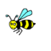

The goal of this project is to further my understanding of image representation and manipulation, and produce large sections of image that is the product of multiple individual images stitched together.
Part 0: Setup
We first set up the diffusion model. The random seed used for this project is 61.
The 64*64 images with inference step values of 20
The 256*256 images with inference step values of 20
The 64*64 images with inference step values of 30
The 256*256 images with inference step values of 30
Part 1: Sampling Loops
1.1: Implementing the Forward Process
To start off, we introduce noise into our test image with the forward process.
The original test imageNoise at t=250Noise at t=500Noise at t=750
1.2: Classical Denoising
To start denoising, we can first try the classical gaussian blur filtering.
Noise at t=250Noise at t=500Noise at t=750
Gaussian blur denoising at t=250Gaussian blur denoising at t=500Gaussian blur denoising at t=750
1.3: One-Step Denoising
Now, we can actually use the diffusion model to denoise the images. We can start off by using one step denoising.
The original test image
Noise at t=250Noise at t=500Noise at t=750
One-step denoising at t=250One-step denoising at t=500One-step denoising at t=750
1.4: Iterative Denoising
Diffusion models are designed to denoise iteratively. In this part we will implement this.
Noisy Campanile at t=90Noisy Campanile at t=240Noisy Campanile at t=390Noisy Campanile at t=540Noisy Campanile at t=690
The original test imageIteratively denoised CampanileOne-step denoised CampanileGaussian blur filtered Campanile
1.5: Diffusion Model Sampling
In part 1.4, we use the diffusion model to denoise an image. Another thing we can do with the iterative_denoise function is to generate images from scratch.
Sample 1Sample 2Sample 3Sample 4Sample 5
1.6: Classifier-Free Guidance (CFG)
In order to greatly improve image quality (at the expense of image diversity), we can use a technicque called Classifier-Free Guidance.
Sample 1 with CFGSample 2 with CFGSample 3 with CFGSample 4 with CFGSample 5 with CFG
1.7: Image-to-image Translation
In part 1.4, we take a real image, add noise to it, and then denoise. This effectively allows us to make edits to existing images.
Here, we're going to take the original test image, noise it a little, and force it back onto the image manifold without any conditioning. Effectively, we're going to get an image that is similar to the test image (with a low-enough noise level).
The original image
SDEdit with i_start=1SDEdit with i_start=3SDEdit with i_start=5SDEdit with i_start=7SDEdit with i_start=10SDEdit with i_start=20
The original image
SDEdit with i_start=3SDEdit with i_start=5SDEdit with i_start=7SDEdit with i_start=10SDEdit with i_start=20SDEdit with i_start=1
The original image
SDEdit with i_start=3SDEdit with i_start=5SDEdit with i_start=7SDEdit with i_start=10SDEdit with i_start=20SDEdit with i_start=1
1.7.1: Editing Hand-Drawn and Web Images
This procedure works particularly well if we start with a nonrealistic image (e.g. painting, a sketch, some scribbles) and project it onto the natural image manifold.
The original image
Avocado at i_start=1Avocado at i_start=3Avocado at i_start=5Avocado at i_start=7Avocado at i_start=10Avocado at i_start=20

The original image
Bee at i_start=1Bee at i_start=3Bee at i_start=5Bee at i_start=7Bee at i_start=10Bee at i_start=20
The original image
Guy at i_start=1Guy at i_start=3Guy at i_start=5Guy at i_start=7Guy at i_start=10Guy at i_start=20
1.7.2: Inpainting
We can use the same procedure to implement inpainting.
The original imageThe maskCampanile inpaintedThe original imageThe maskCat inpaintedThe original imageThe maskDog inpainted
Now, we will do the same thing as SDEdit, but guide the projection with a text prompt.
The original image
Rocket at noise level 3Rocket at noise level 5Rocket at noise level 7Rocket at noise level 10Rocket at noise level 1Rocket at noise level 20
The original image
Coast at noise level 3Coast at noise level 5Coast at noise level 7Coast at noise level 10Coast at noise level 1Coast at noise level 20
The original image
Coast at noise level 3Coast at noise level 5Coast at noise level 7Coast at noise level 10Coast at noise level 1Coast at noise level 20
1.8: Visual Anagrams
In this part, we will create an image that looks like "an oil painting of people around a campfire", but when flipped upside down will reveal "an oil painting of an old man".
an oil painting of an old mana man wearing a hata photo of the amalfi costan oil painting of people around a campfirea rocket shipa photo of a dog
1.9: Hybrid Images
In this part we'll implement Factorized Diffusion and create hybrid images just like in project 2.
Hybrid image of a skull and a waterfallHybrid image of a skull and a waterfallHybrid image of a barista and an old manHybrid image of a barista and an old man